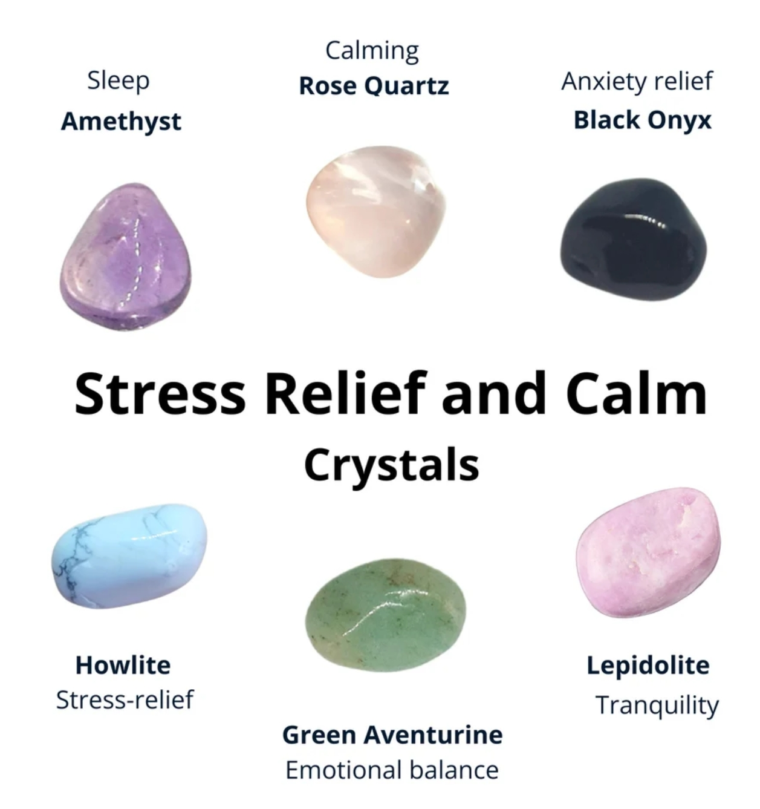
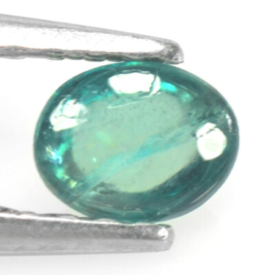
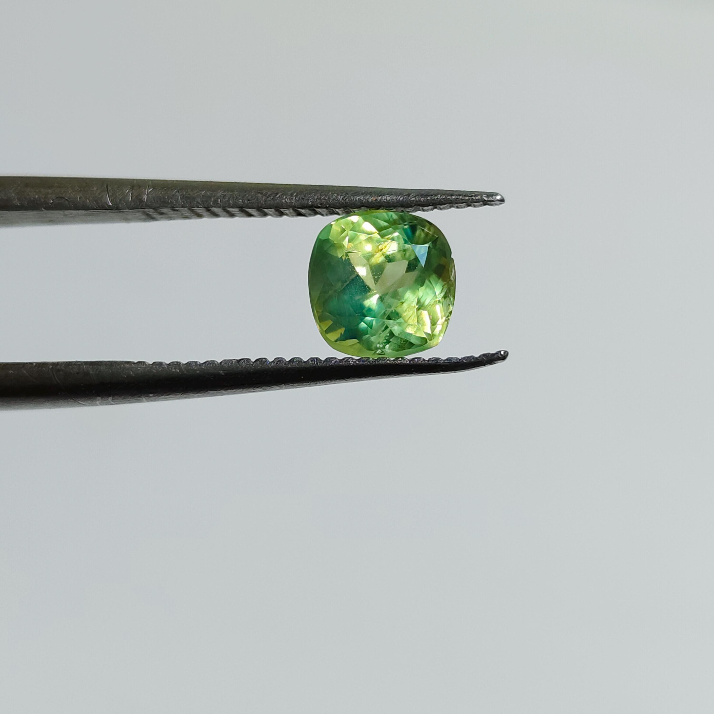
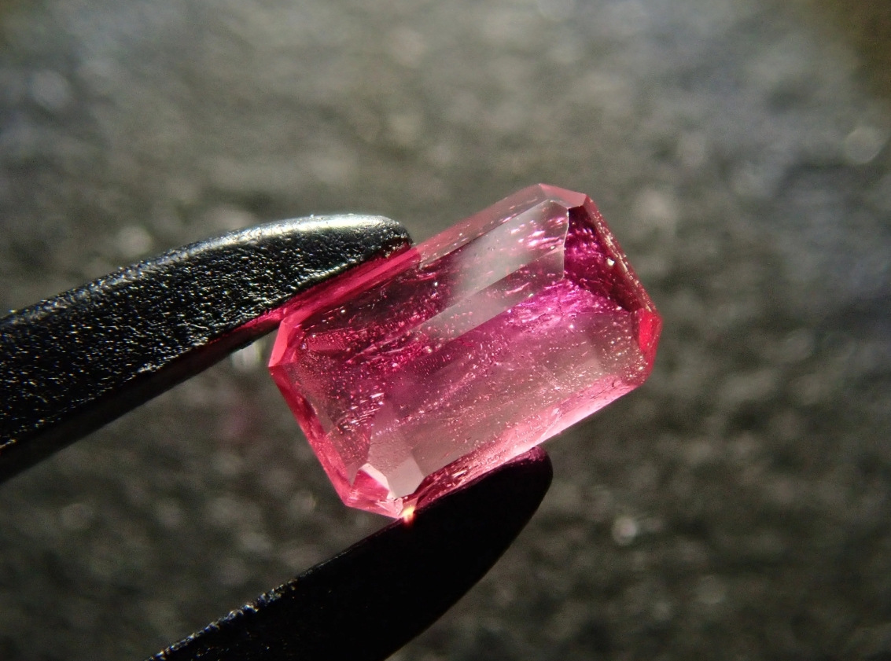

I am looking to offload my crystal collection at the most reasonable prices
on the market to help support me through my IST educational journey!
Take a peek at my selection and contact me for more information
regarding when these beauties will be available for purchase and/or delivery!
I am attempting to get pre-orders in now so that I have a reasonable
idea of how many orders/how far I will need to ship my crystals. Please pre-order!
Take a look for yourself! Here are a few interesting reasons to collect crystals:

Just take a quick look at all these calming crystals! Crystals can
have a number of properties, these ones specifically are known to
amplify feelings of calmness and peace.
Interested in the rare discounted collection of crystals? Here is the current inventory, from most-to-least rare:



Read more about rare gemstones: Gemstones: Wikipedia